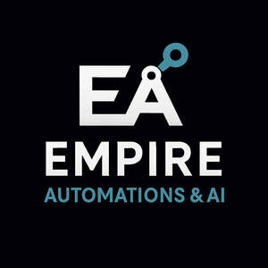

Trade Mark Journal No.2025/038 19 September 2025
UK00004261023 8 September 2025 (9,35,37,42)

- Class 9
- Application software; Building management software; Cloud computing software; Communication apparatus and software; Communication, networking and social networking software; Computer software; Computer software applications; Computer software for accessing, browsing and searching online databases; Computer software for use as an application programming interface (API); Computer-aided design (CAD) software; Content access software; Data and file management and database software; Databases; Document automation software; Downloadable application software; Downloadable mobile applications for the management of information; Downloadable or pre-recorded educational videos; Downloadable publications in electronic form; Downloadable smartphone software applications; Downloadable software; Downloadable software in the nature of a mobile application; Electronic notepads; Electronic organisers; Industrial automation software; Interactive business software; Inventory software; Office software; On-premise management software; Personal digital assistants; Project management software; Publications in electronic format; Real-time data processing apparatus; Software; Software applications; Software for the analysis, collection, management, compilation, transcription, retrieval, systemisation, verification, recording, administration, research, monitoring, coding, decoding, encryption, storage, conversion, recovery, duplication, migration and compression of data; Teaching and instructional apparatus; Training guides and manuals in electronic format; Virtual assistant software; Web application software; Workflow management system software.
- Class 35
- Advertising, marketing and promotional services; Analysis of business trends, data and statistics; Arranging of contracts for the purchase and sale of goods and services, for others; Assessment analysis relating to business management; Business administration, advisory, consultancy, organisation and management; Business administration services in the field of construction; Business consultancy relating to the administration and management of information technology and data; Business data analysis; Business intelligence services; Business intermediary and advisory services in the field of selling products and rendering services; Business intermediary and networking services; Business intermediary services relating to the matching of buyers and sellers; Business management of logistics for others; Business project management services; Business project management services for construction projects; Commercial information services; Commercial intermediation for business purposes; Compilation and systemisation of written communications and data; Data collection; Data compilation; Data entry; Data file administration; Data inputting services; Data management; Data processing; Data recording; Data retrieval; Data systemisation; Data transcription; Data verification; Database management; Electronic data processing; Inventory control and management; Market intelligence services; Market research services; Office functions; Organisation of events, exhibitions, fairs, trade fairs and shows for commercial, promotional and advertising purposes; Price analysis and comparison services; Procurement and procurement management services; Providing a searchable online advertising guide featuring the goods and services of online vendors; Providing consumer product information; Provision of an online marketplace for buyers and sellers of goods and services; Sales administration, management and promotion services; Secretarial and clerical services; Statistical analysis and reporting services for business purposes; Stock management services; Systemisation of information and data into computer databases; Transcription of communications, data, messages and recorded communications; Transcription services; information, consultancy and advice in relation to the foregoing.
- Class 37
- Building, construction and demolition; Construction project management services; Building project management services; Construction management services; Building consultancy services; Building construction advisory services; Construction advisory services; Consultancy services relating to the construction of buildings; information, consultancy and advice in relation to the foregoing.
- Class 42
- Cloud computing services; Coding, decoding, encrypting, storing, converting, recovering, duplicating, researching, migrating and compressing data; Computer project management services; Construction design; Design and development of software for Automated Business Process Discovery (ABPD); Design and updating of home pages and web pages; Design services; Design, development and rental of computer hardware and software; Design, development and rental of computer hardware and software for inventory management; Development of construction projects; Development, updating and maintenance of software and database systems; Electronic data storage and data back-up services; Hosting of databases; Hosting of digital content; Hosting of mobile applications; Hosting platforms on the Internet; Installation, maintenance, rental, and updating of computer software; Platform as a service (PaaS); Providing online, non-downloadable software; Providing temporary use of non-downloadable software applications accessible via a website; Software as a service (SaaS); Technological services; Website hosting services; information, consultancy and advice in relation to the foregoing.
EMPIRE AUTOMATION LTD
Representative: LEGALVISION LAW UK LTD